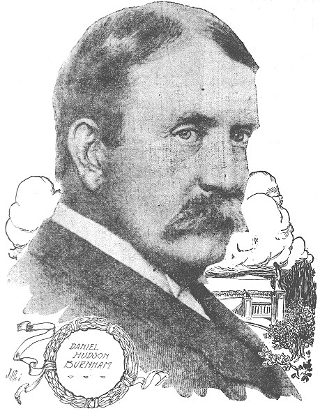

Technically speaking, the foundation of the city of Manila was 1571, and was a direct outcome of Spanish colonisation. However prior to 1571 a settlement was known to exist in proximity to the Pasig River. Records from about 900AD reveal not only the presence of a settlement to the north and south of the mouth of the Pasig River, but that local civilization contained a degree of political, social, and economic complexity. Although containing a population of just 2,000 people by the time of the Spanish arrival, Maynila as it was then known had well-established ties with different islands in the Philippine Archipelago, as well as overseas places such as Brunei, China, Siam, and the Malay Peninsula...
Read more >
The arrival of the Spanish ultimately reshaped how life was lived in many parts of the Philippine Archipelago, including in Manila. As one of the first colonial cities in the Philippines Manila in 1574 was given the title Insigne y Siempre Leal Cuidad (Distinguished and Ever Loyal City), and in light of the need to safely administer the Philippines from the new capital large stone fortifications were erected from the 1590s. Known as the Intramuros (‘within the walls’) the walled city was the epicentre of colonial government, religion, and culture until 1898...
Read more >

Arguably the most famous architect-urban planner in the world by the start of the twentieth century, Burnham was approached by the United States government in 1904 to prepare a city plan for Manila. The resultant 1905 scheme, in the style of grandiose City Beautiful type of urban design, sought to radically restructure the environmental form of Manila, and in conjunction enable the US colonial government in the Philippines to manage in a controlled manner the development of the Philippine capital city...
Read more >
Burnham’s model for the 1905 plan of Manila was inspired by the layout of the Columbian World’s Exposition in Chicago and the 1791 plan for Washington DC: an urban layout renewed in 1901-2 as part of the McMillan Plan. Re-establishing the grand axes through the centre of the American capital, Burnham’s project in Washington DC presented grand vistas towards the Capitol Building, the White House, and Washington Monument...
Read more >
The key elements of the 1905 plan were the redevelopment of the waterfront, the creation of a monumental roadway between Manila and the port of Cavite, radiating boulevards between the central districts and urban periphery, new parks and playfields, and a new civic core. Whilst the city plan was not enacted as a whole components of the 1905 plan have been implemented: the open area at the waterfront called the Luneta has been enlarged, new public edifices have been built, the roadway between Manila and Cavite – today called Roxas Boulevard – was laid out, and new urban spaces, including Rizal Park, have been established. Notably within Rizal Park, as Burnham intended, is a national monument: statuary to Philippine hero Jose Rizal...
Read more >
Quite possibly the most important green space in the whole of the Philippines, Rizal Park in Manila was designed from 1905 as a diminutive version of the Mall in Washington. As the anchor for the plan of Manila by Daniel Burnham, the space was originally to be surrounded by buildings of the colonial government, with boulevards radiating away from the area to the suburbs. However, or great note, the central axis of the space from the outset was to be marked at its front by a monument to the Philippine hero, Jose Rizal, and today the memorial has become a must-see for tourists and local citizens alike...
Read more > Copyright ©
The Chinese University of Hong Kong Library. All rights reserved.
Copyright ©
The Chinese University of Hong Kong Library. All rights reserved.